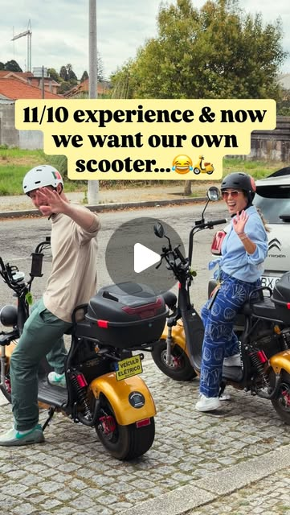

Instagram Reel

Such a fun way to explore Porto...and beyond! 🛵🌊
video transcript (enriched by ClaudeClaw)
Summary
[CAPTION]
Such a fun way to explore Porto...and beyond. 🛵🌊
We loved getting to see a completely different side of Portugal’s coastline, from quiet pine forests to wide-open beaches and charming seaside towns.
[CAPTION]
Such a fun way to explore Porto...and beyond! 🛵🌊
We loved getting to see a completely different side of Portugal’s coastline, from quiet pine forests to wide-open beaches and charming seaside towns.
📍 Esmoriz – Picked up our electric scooters from @portoscooterco
📍 Maceda Forest – Peaceful roads winding through the pine trees
📍 Praia de Cortegaça – Quick stop to check out the waves
📍 Cortegaça Heart – Rode beneath the town’s giant crocheted heart
📍 Praia de São Pedro de Maceda – Beautiful beach & cafe
📍 Furadouro – Lunch & a stroll along the promenade
A huge thank you to Jared and Abby at @portoscooterco for such an awesome day. We can’t recommend them enough. The route was beautiful, the scooters were easy to ride, and no previous scooter or motorcycle experience is needed. You can ride solo or share a scooter, making it a great adventure whether you’re exploring with friends or family.
Share this with someone you’d wanna ride with 👇
#PortoPortugal #PortugalTravel #PortoDayTrips #VisitPortugal #porto
[VIDEO]
If you're looking for a fun day trip from Porto, this is an absolute blast. We started in Esmarish, where we rented electric scooters from Porto Scooter Company and headed further south. One of our favorite parts of the ride was cruising through the pine forest around Maceda. It was incredibly peaceful, hardly any cars and long stretches of road winding through the trees. Along the way, we stopped to check out the waves at Praia de Corte Gassa and got to see the town's giant crochet heart. It was so fun to see this beautiful community art project, which stands about 15 meters tall, up close, and get to ride beneath it. Next, we stopped at Praia de Sal Pedro de Macera. For a Sunday morning, we couldn't believe how quiet it was. Just a beautiful beach, the sound of the waves, a cute cafe at the top, and plenty of room to soak it all in. By lunchtime, we've made it to Florida for a quick stroll along the promenade before grabbing a bite to eat at one of the cafes and heading back through the forest. Such a fun adventure, and honestly, we can't think of a better way to experience this stretch of Portugal's coastline. Between the forest paths, quiet beaches, and little towns along the way, and ended up being one of our favorite day trips we've done from Porto.
View original on Instagram Reel →